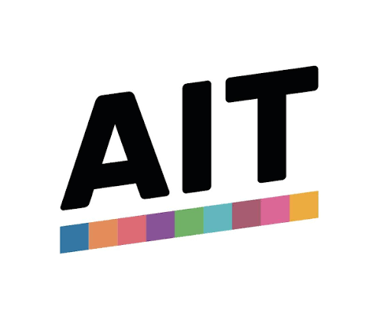

Для поступающих в вуз
Результат теста часто входит в пакет документов при поступлении на англоязычные программы.
Admission Insights Test оценивает аналитическое мышление, эссе и логику — мы готовим учеников проходить его спокойно и результативно.

AIT (Admission Insights Test) — вступительный тест, который используют университеты и колледжи для оценки готовности абитуриента к обучению на английском языке.
Задания на логику и работу с информацией показывают, как вы решаете нестандартные задачи.
Нужно ясно и последовательно изложить позицию — этому мы учим шаг за шагом.
Работа с академическими текстами разного уровня сложности готовит к настоящей учебной нагрузке.
AIT подходит школьникам и абитуриентам, которые планируют поступать в программы с обучением на английском языке.
Результат теста часто входит в пакет документов при поступлении на англоязычные программы.
Знакомый формат и практика снижают стресс и помогают показать реальный уровень знаний.
Подготовка к AIT прокачивает аналитические навыки, которые пригодятся в университете и за его пределами.
Мы начинаем с диагностики и строим программу вокруг ваших сильных и слабых сторон — без лишней теории.
Пробный тест показывает, на чём стоит сосредоточиться в первую очередь.
Разбираем примеры заданий и учимся укладываться во время экзамена.
Каждая работа разбирается индивидуально: структура, аргументы, язык.
Запишитесь на консультацию — определим ваш уровень и составим понятный план подготовки к тесту.
Получить консультацию